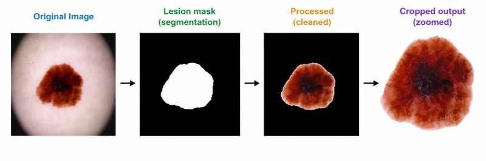

Authors: Sneha Chinchakandi, Yashaswini Mellikeri, Praneel Nadgir, Yashas A B, Sumaiya Pathan
Research Focus: Medical Image Segmentation, Split-Attention CNNs, Blackout Noise Filtering, EfficientNet Backbones.
Abstract: One of the major dermoscopic melanoma classification problems is background noise; this is represented by hair, rulers, and gel residues, as well as the inability of the model to adapt to lesions of different sizes. To solve this, we propose MK-DCSAU-Net (Multi-Kernel Deeper and More Compact Split-Attention U-Net), which owns a Multi-Kernel Primary Feature Conservation (MK-PFC) module. The network extracts fine boundary details and global lesion structures by processing dermoscopic images with parallel $3\times3, 7\times7, \text{ and } 11\times11$ receptive fields.

Figure 1: MK-DCSAU-Net Pipeline. Five-level encoder-decoder structure. Standard input convolution is replaced by parallel Multi-Kernel PFC blocks with auxiliary supervised heads in the decoder.
Core Contributions
- Multi-Kernel PFC Block: Directly addresses lesion scale variability by utilizing three parallel depthwise separable convolutions ($3\times3, 7\times7, 11\times11$) to capture both micro-textures and macro-boundaries.
- Compact Split-Attention (CSA) Blocks: Suppresses background noise and accentuates diagnostically relevant structures through channel-wise feature recalibration.
- Blackout Preprocessing Pipeline: A mathematical bitwise mask operation ($I_{blackout} = I \odot M$) setting all non-lesion pixels to zero, preventing the classifier from learning false correlations from hair or rulers.
- Spatial Attention Module (SAM): Enhances an EfficientNet-B3 classifier backbone with a Spatial Attention Module to isolate pigment networks under 8-way Test-Time Augmentation (TTA).
💡 High Boundary Fidelity & Intermediate Supervision
Deep supervision is integrated at intermediate decoder stages to stabilize gradient backpropagation across highly heterogeneous datasets. Combined with a mixed Dice-BCE loss, it drastically sharpens segmentations on low-contrast lesions.
Quantitative Benchmarks
Evaluated on the ISIC 2018 benchmark (2,594 images) across 10,000 Monte Carlo cross-validation partitions:
| Segmentation Method | Backbone Type | DSC Score ↑ | mIoU Score ↑ |
|---|---|---|---|
| U-Net | CNN | 0.874 | 0.802 |
| UNet++ | CNN | 0.883 | 0.812 |
| DCSAU-Net (Baseline) | CNN | 0.904 | 0.841 |
| MK-DCSAU-Net (Ours) | Multi-Kernel CNN | 0.919 Best | 0.866 (+7.4% mIoU Gain) Best |